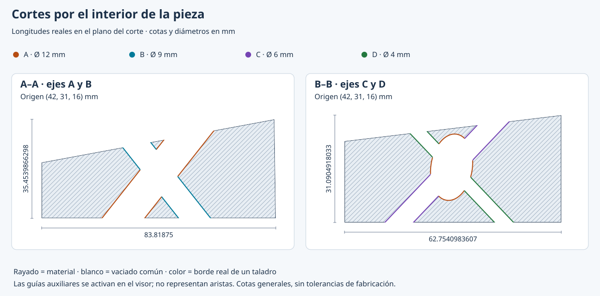

Cuéntale qué imaginas
Empieza con palabras, un croquis o unas vistas. Añade medidas si las tienes; los supuestos deben quedar claros si faltan datos.
Lo que imaginas, desde otro ángulo.
Describe una forma o comparte un croquis. Proyecciones SVG guía a Codex para construir su geometría y dibujar el frente, la parte superior, el lateral y su giro.
01 / LA IDEA
Piensa en mirar un objeto de frente, desde arriba y de lado. Cada vista cuenta una parte de la historia. Juntas te ayudan a entender el volumen.
Empieza con palabras, un croquis o unas vistas. Añade medidas si las tienes; los supuestos deben quedar claros si faltan datos.
Codex interpreta tu idea siguiendo la skill. Define un modelo que sirve de origen para todos los dibujos.
Recibe las tres vistas y un giro. Compara ángulos, abre los archivos en tu navegador y pide los ajustes que necesites.
¿Qué es una skill? Un conjunto de instrucciones y herramientas que enseña a Codex a realizar una tarea. Esta se ocupa de las proyecciones; tú aportas la idea.
02 / TOCA, GIRA, COMPARA
De una cuña sencilla a cuatro conductos que se cruzan. Todos estos dibujos se calcularon con la versión estable.
Una rampa sencilla: 6 × 4 × 3 cm.
Tres miradas.
La misma pieza.
Ejemplos ilustrativos, con medidas supuestas. Las líneas discontinuas muestran las aristas ocultas. Los archivos se pueden abrir y editar por separado.
NUEVO EN 1.2.0
Las mismas medidas sirven para documentar la pieza, crear una malla para un videojuego y preparar un modelo para impresión. Los agujeros se cruzan también en el interior de los archivos 3D.
GLB usa metros, con Y arriba. 3MF y STL se exportan en milímetros, con Z arriba. Descarga cada formato desde la galería o pídeselo a Codex.
Usa $proyecciones-svg para generar una pieza irregular con cuatro taladros de distinto diámetro que se crucen. Conserva las tres vistas y el giro SVG; añade cortes, .cota y mallas GLB, 3MF y STL. Indica las medidas y la aproximación de las curvas.
Sólo los archivos 3D de piezas taladradas necesitan Manifold y NumPy. SVG, cortes, Cota y las mallas sin agujeros funcionan sin esos paquetes. Pide a Codex que los instale en un entorno virtual, usando el archivo requirements-mesh.txt incluido en la skill.
python -m pip install --only-binary=:all: -r <skill>/requirements-mesh.txt
python <skill>/scripts/generar.py modelo.json --output-dir salida --viewer --sections --export-cota --export-glb --export-3mf --export-stlLos cilindros de las mallas se aproximan con facetas y precisión radial configurable. El modelo no incluye ajustes de impresora, laminado ni G-code. Revisa el resultado antes de fabricar.

03 / TU PRIMERA PIEZA
Con la skill instalada, habla con Codex como hablarías con alguien que te ayuda a dibujar. Puedes copiar uno de estos ejemplos y adaptarlo.
Antes, instala la skillUsa $proyecciones-svg para dibujar una cuña de 6 cm de ancho, 4 cm de profundidad y 3 cm de alto. Muéstrame el alzado, la planta, el perfil derecho y un giro SVG.
04 / PONLA EN MARCHA
Necesitas Codex y Python 3.10 o posterior. Las vistas SVG, los cortes y Cota usan Python estándar. Sólo las mallas con agujeros requieren una dependencia opcional.
Usa los enlaces de esta sección para descargar proyecciones-svg-1.2.0.zip e install_skill.py. Descarga también SHA256SUMS para comprobarlos. No necesitas una cuenta de GitHub.
Abre esa carpeta como proyecto de Codex. Así podrá localizar los archivos descargados.
Codex puede comprobar el paquete y ejecutar el instalador por ti. La instalación requiere Python disponible en tu equipo.
Instala proyecciones-svg-1.2.0.zip como skill de Codex usando install_skill.py. Comprueba las sumas SHA-256 y el manifiesto. Si existe una versión anterior, usa --update para conservar una copia.
Descarga el ZIP, install_skill.py y SHA256SUMS con los enlaces de esta sección. Abre una terminal en esa carpeta y elige tu sistema.
python install_skill.py proyecciones-svg-1.2.0.zip --skills-dir "$env:USERPROFILE\.codex\skills"Compara los resultados con las líneas correspondientes de SHA256SUMS. El instalador comprueba además el manifiesto dentro del ZIP.
Get-FileHash proyecciones-svg-1.2.0.zip, install_skill.py -Algorithm SHA256Las sumas detectan cambios; descarga siempre desde la release del proyecto.
Si personalizaste CODEX_HOME, usa su carpeta skills como destino. Añade --update para actualizar conservando una copia de la instalación anterior.
Después, abre un chat de Codex e invoca $proyecciones-svg. Si no aparece, reinicia Codex para que vuelva a descubrir las skills.
05 / LO QUE TE LLEVAS
El resultado no se queda en el chat. Guarda, comparte o edita cada archivo. El visor se abre en el navegador y funciona sin conexión.
Mallas opcionales para videojuegos e impresión, con los conductos interiores comunicados.
Secciones del material para comprender lo que ocurre dentro.
El volumen editable en Cota, con las medidas convertidas a milímetros.
Alzado, planta y perfil a la misma escala, con cotas generales.
Una vista oblicua y una vuelta del volumen con su visibilidad calculada.
Un visor autónomo para mover el ángulo, reproducir el giro y ver las ocultas.
La geometría reproducible y el registro de versión, opciones y archivos.
Es opcional. Descarga «Archivo Cota» en la galería y ábrelo con OPEN en Cota. Allí puedes revisar el volumen, añadir cotas y preparar una lámina.
Genera las tres vistas y el giro SVG de esta pieza. Añade un archivo .cota para editar el volumen en Cota y conserva el JSON original.
Si usas la terminal, añade --export-cota al comando del generador. El archivo usa milímetros. Las ediciones en Cota no actualizan los SVG originales; su lámina y el giro se entregan por separado. Cota representa los sólidos mediante mallas, por lo que debes revisar sus resultados antes de usarlos técnicamente.
Define un modelo admitido en modelo.json y ejecútalo con el generador instalado. No necesitas Codex para este paso.
python3 "$HOME/.codex/skills/proyecciones-svg/scripts/generar.py" modelo.json --output-dir salida --mode all --viewerEn Windows usa python y la ruta de tu instalación. El programa recibe geometría JSON; la interpretación de las descripciones o croquis corresponde a Codex.
EL ALCANCE, CLARO
Úsala para aprender, explorar una pieza o explicar una geometría. Revisa el resultado antes de darle un uso técnico.
06 / DUDAS HABITUALES
Para pedir una pieza a Codex, no. Descríbela con palabras y aporta las medidas que conozcas. La instalación necesita Python; puedes pedir ayuda a Codex con ese paso. Si quieres definir los modelos JSON por tu cuenta, sí necesitarás conocimientos técnicos.
Alzado es la vista de frente; planta, desde arriba; perfil, desde un lateral. Esta página usa el perfil derecho. En tercer diedro, la planta se coloca arriba del alzado y el perfil derecho a su derecha.
Codex ayuda a interpretar tu petición. Los dibujos los calcula Python y se guardan como vectores SVG. El cálculo SVG no utiliza generación de imágenes, un motor 3D ni servicios externos. La exportación opcional de mallas taladradas usa Manifold para construir los vaciados. El uso de Codex tiene sus propios requisitos de acceso.
No siempre. Tres vistas pueden ser compatibles con varios volúmenes. La skill pide contrastar las vistas, señalar los supuestos y solicitar más información cuando la ambigüedad cambia la forma.
Admite los casos cilíndricos documentados. No es un modelador general de superficies libres y los ejemplos de taladros no incluyen agujeros ciegos, salidas laterales ni todas las combinaciones posibles de ejes y diámetros.
Sí. La versión 1.2.0 completa las pruebas en Windows, Linux y macOS con Python 3.10 y 3.14 en GitHub Actions. En la guía por terminal elige macOS para usar los comandos correspondientes. La evidencia de cada release identifica los entornos probados.
Sí. El repositorio y la versión estable son públicos. Puedes descargar el ZIP, el instalador Python y las sumas SHA-256 directamente desde esta página, sin iniciar sesión. La skill se distribuye con licencia MIT y su código está disponible para consultarlo y modificarlo según esa licencia.
DE LA IDEA AL DIBUJO